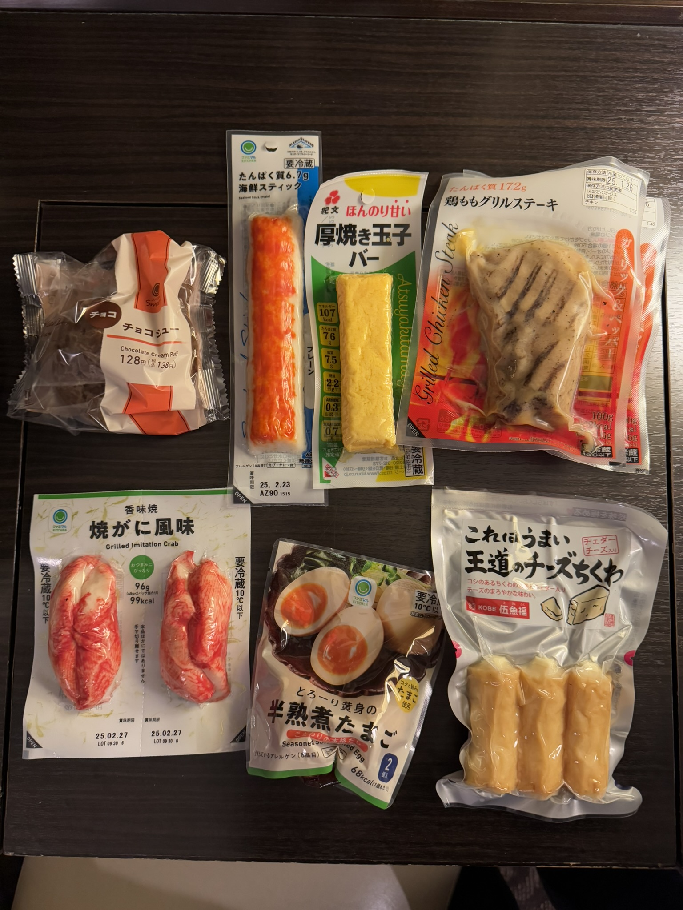

Sapporo / 19 Jan 2025 / Dinner
7-Eleven dinner after a full winter day.
After Moerenuma Park, seafood lunch, and Mt. Moiwa, dinner was a simple convenience store spread back at the hotel. Not fancy, but very Japan-trip-real.
Personal Review
Convenience store food as part of the trip
This kind of meal is one of the small pleasures of traveling in Japan. You can pick up a little bit of everything: crab-style snacks, thick egg, grilled chicken, cheese chikuwa, and a sweet cream puff for dessert.
It was less about finding the best restaurant and more about ending the day comfortably in the hotel, sharing snacks, and trying whatever looked interesting on the shelf.
Worth it? Yes, as a relaxed hotel-room dinner after a packed Sapporo day.
Back to Sapporo trip note